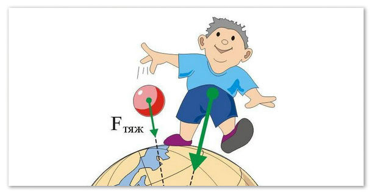

Сила тяжести, действующая на тело, находящееся на поверхности Земли равна массе тела, умноженной на постоянную
Сила тяжести - сила (Fт), с которой Земля притягивает к себе тело, равная произведению массы (m) тела на коэффициент пропорциональности (g) - постоянную величину для Земли.

Здесь F – сила тяжести, m – масса, g — ускорение свободного падения.
Единица измерения силы – Н (ньютон).
Из-за того, что Земля имеет сплюснутую форму, то есть её радиус не везде одинаков, ускорение свободного падения меняется в зависимости от географической широты, от 9,832 на экваторе до 9,78 на полюсах. 9,8 – его среднее значение.
Сила тяжести действует на тело, имеющее опору или подвес. Если тело их не имеет, то есть находится в состоянии свободного падения, то говорят, что тело находится в невесомости. Сила тяжести всегда направлена к центру Земли.
Сила трения
Теоритические сведения
Трение — процесс взаимодействия тел при их относительном движении (смещении) либо при движении тела в газообразной или жидкой среде. По-другому называется фрикционным взаимодействием. Изучением процессов трения занимается раздел физики, который называется механикой фрикционного взаимодействия, или трибологией.
Трение главным образом имеет электронную природу при условии, что вещество находится в нормальном состоянии. В сверхпроводящем состоянии вдалеке от критической температуры основным «источником» трения являются фононы, а коэффициент трения может уменьшиться в несколько раз
При наличии относительного движения двух контактирующих тел силы трения, возникающие при их взаимодействии, можно подразделить на:
Трение скольжения
— сила, возникающая при поступательном перемещении одного из контактирующих/взаимодействующих тел относительно другого и действующая на это тело в направлении, противоположном направлению скольжения.
Трение качения
— момент сил, возникающий при качении одного из двух контактирующих/взаимодействующих тел относительно другого.
Трение покоя
— сила, возникающая между двумя контактирующими телами и препятствующая возникновению относительного движения. Эту силу необходимо преодолеть для того, чтобы привести два контактирующих тела в движение друг относительно друга. Возникает при микроперемещениях (например, при деформации) контактирующих тел. Она действует в направлении, противоположном направлению возможного относительного движения.
Сила Архимеда
Теоритические сведения
Закон Архимеда формулируется следующим образом:
на тело, погружённое в жидкость (или газ), действует выталкивающая сила, равная весу жидкости (или газа) в объёме погруженной части тела. Сила называется силой Архимеда:
F=qgV
q— плотность жидкости (газа), g — ускорение свободного падения, а V — объём погружённого тела (или часть объёма тела, находящаяся ниже поверхности). Если тело плавает на поверхности (равномерно движется вверх или вниз), то выталкивающая сила (называемая также архимедовой силой) равна по модулю (и противоположна по направлению) силе тяжести, действовавшей на вытесненный телом объём жидкости (газа), и приложена к центру тяжести этого объёма.
Тело плавает, если сила Архимеда уравновешивает силу тяжести тела.
Следует заметить, что тело должно быть полностью окружено жидкостью (либо пересекаться с поверхностью жидкости). Так, например, закон Архимеда нельзя применить к кубику, который лежит на дне резервуара, герметично касаясь дна.
Что касается тела, которое находится в газе, например в воздухе, то для нахождения подъёмной силы нужно заменить плотность жидкости на плотность газа. Например, шарик с гелием летит вверх из-за того, что плотность гелия меньше, чем плотность воздуха.
Закон Архимеда можно объяснить при помощи разности гидростатических давлений на примере прямоугольного тела.ся в невесомости. Сила тяжести всегда направлена к центру Земли.